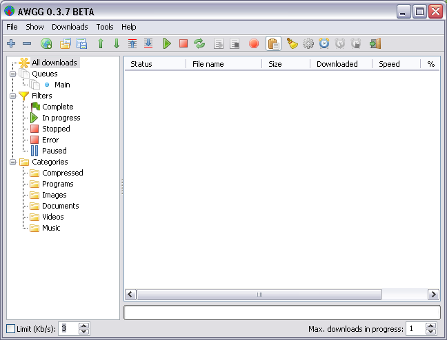

AWGG — is a cross-platform download manager that uses the most popular downloads engines (text based) like wget, aria2, cURL and axel. AWGG is absolutely free and is distributed with open source (GNU GPL v2).
Some features of AWGG:
clipboard monitor
proxy support
reanude support
site grabber
multiple queues
multiple scheduler
shutdown after complete schedule
multiple downloads at the same time
speed limits
configurable folder downloads by file types
advanced parameters for downloads
and more...
Appearance

Note: the project is under heavy development now, so information presented in this document may be incomplete or irrelevant.